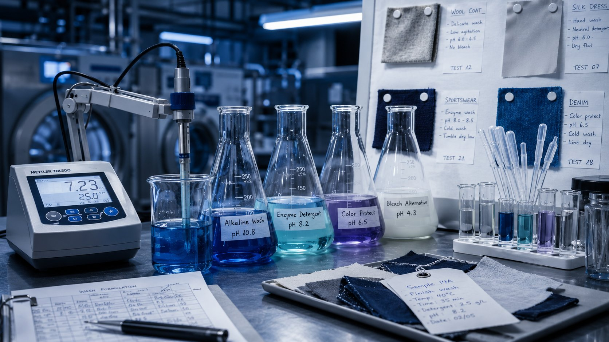
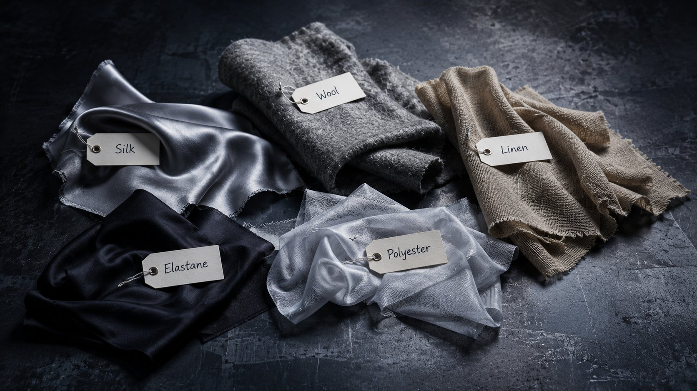

Scroll
← Back to Catalyst
LATHER-
Game 003 · Medium Eurogame · In Mechanics Design
LATHER-
WORK
The Fabric Science Game
The Fabric Science Game
"Every garment that arrives carries a secret. Read the chemistry correctly — and wash it perfectly."
WashWheel is a strategic card-deck-building eurogame set in a high-end industrial fashion laundry. Build precise wash formulas using real textile chemistry, compete through the rotating Wash Wheel market, and survive Crisis Events that disrupt everything.

The idea began with a carpet. Mehrad was trying to wash a small rug at home and had no idea what the right approach was. He picked up the care label — and found a world he hadn't noticed. Temperature ranges. Chemistry requirements. Agitation warnings. A whole science encoded in tiny symbols that most people ignore entirely.
"What if people actually understood this?" These aren't arbitrary rules — they're chemistry. And when you ignore them, your clothes suffer and end up in landfill. When you understand how to care for garments correctly, they last longer. That's the sustainability message at the heart of WashWheel.
WashWheel is the only strategy game about the science of textile care. It can partner with detergent brands, fashion houses, and sustainability organisations — and belongs in every school teaching chemistry or environmental science.
Your board represents a specialist textile care operation in a high-end fashion warehouse — silk evening gowns hanging beside sportswear; steel drums steaming beside chemistry benches. Every garment is a puzzle requiring precise scientific treatment.
The Wash Wheel — the central rotating card market — is the game's beating heart. Resources rotate constantly, creating a shifting economy. Timing the wheel is as important as knowing your fabric chemistry.
Every garment has a chemical profile. WashWheel puts you in the role of the expert who reads those signals and acts on them — correctly.
Each fibre responds differently to heat. The dominant fibre sets the primary range — and minority fibres can restrict your options further. Get it wrong and garments are damaged permanently.
Different fibres require different chemical environments to be cleaned safely. The wrong detergent class causes irreversible damage. Knowing which to use — and why — is the core skill.
Mechanical force that works on robust fabrics can permanently distort delicate ones. The right cycle is as critical as the right chemistry — every player has a science reference card.

Each round flows through four phases. The rotating Wash Wheel market creates constant competition — what's available changes every round, and every choice shapes what remains for others.
An unexpected event disrupts the market or resources. Crisis cards demand adaptation — flexible strategies survive; rigid ones suffer.
Take one action — acquire from the Wash Wheel, submit a formula, advance your research, or pass. Every choice reshapes what's available to everyone.
Build and submit your wash formula against a garment. Scientific precision is rewarded. An incorrect formula wastes your resources.
The market shifts. Resources rotate. When the garment pile runs low, the final scoring round begins.
12 slots. 4 zones. Constantly rotating. The Wash Wheel is the shared resource market — different zones offer different pricing advantages. Cards nobody claims eventually fall off the wheel entirely.
Reading the wheel is as important as reading your fabric chemistry. Timing an acquisition one turn ahead of your opponent is often the margin between scoring and missing out entirely.
Formula Flexibility
A once-per-round ability giving extra flexibility with formula card management.
Eco-Efficiency Bonus
Rewards low-temperature, sustainable wash choices with additional resources each round.
Fibre Mastery
Gains advantages on specific fibre types through research progression tracks.
Free Acquisition
Once per round: acquire one card from the Wash Wheel at no cost into your holding space.

WashWheel can partner with detergent brands, luxury fashion houses, and sustainable textile companies — a natural co-branding opportunity far beyond the hobby.
Clothes washed correctly last longer. WashWheel embeds this lesson in every game action — making sustainability tangible, personal, and memorable.
Textile science and chemistry content that maps directly to school curricula — in a format students will remember long after the lesson ends.
No other game uses textile chemistry as its core mechanic. WashWheel is completely novel — with massive crossover appeal beyond traditional board game audiences.
Core concept locked · Mechanics design in progress · Follow us on Instagram for updates